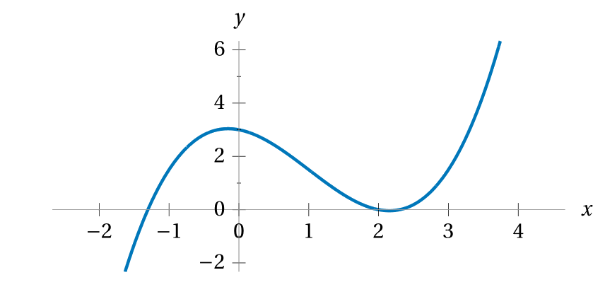

Below is the graph of a function \(y = f(x).\)
Estimating from the graph,
what is the value of \(f(3)?\)
What is the value of \(f(0)?\)
For what value(s) of \(x\) does \(f(x) = 0?\)

Here’s a table of some input/output pairs
of a function \(\ell.\)
What is the value of \(\ell(3)?\)
What is the value of \(\ell(-1)?\)
For what value(s) of \(x\) does \(\ell(x) = 0?\)
input \(x\)
-5
-4
-3
-2
-1
0
1
2
3
4
5
output \(\ell(x)\)
0.03
99
18
0
341.1
-90
6013
-6
0
3.1415
420
A function \(M\) with domain of all real numbers,
is defined explicitly in terms of a formula,
\(M(x) = x^3 - 10x^2 + 7.\)
What is the output of \(M\)
corresponding to an input of \(3?\)
What is the value of \(M(-1)?\)
What is the range of \(M?\)
This table of input/output values
supposedly describes a function \(f,\)
but there’s a problem. What’s the problem?
Can you explain why \(f\) isn’t really a function?
input \(x\)
-1
4
-3
-9
1
0
12
-7
3
4
…
output \(f(x)\)
1
18
-5
31
-9
12
5
5
43
9
…
Every morning, for the first two weeks of last month,
Clapton weighed himself and recorded his weight (in lbs)
in the table below.
Day
1
2
3
4
5
6
7
8
9
10
11
12
13
14
Weight
177
177
176
177
176
174
174
173
174
174
173
170
172
171
Does the data in this data describe Clapton’s weight
as a function of time?
What did you have to check to answer this?
How much did Clapton weight
on the 11th day of the month?
On what day(s) did Clapton weight 173lbs?
How much total weight did Clapton lose
over those fourteen days?
On average, how much weight did Clapton lose per day?
Below is the graph of a function \(y = C(t)\)
that models the price, in dollars (USD),
of a single share of Twitter (TWTR) stock
at the end of the week \(t\) of the year 2022,
leading up to October 27th, \(t = 44,\)
when Elon Musk bought Twitter
and it was de-listed from the New York Stock Exchange.
If the domain of the function \(C\) is \(0 \lt t \leq 44,\)
what is the range of the function?
Estimating, what is the value of \(C(17),\)
and what does this value mean in the context of the model?
Estimating, for what week(s) of 2022
was the price of one share of Twitter stock $40?
According to this model,
during what months of 2022 was the price
of shares in Twitter’s stock increasing?
If a ball is thrown into the air
at a speed 17 meters-per-second,
its height (in meters) measured \(t\) seconds after being released
can be modelled by the function
\[ h(t) = 1.7 + 17t - 4.9t^2 \,. \]
What is the value of \(h(1),\)
and what does this value mean in the context of the model?
What is the height of the ball three seconds after being thrown?
When the ball comes back down and hits the ground,
its height will be zero meters.
Using technology, test other values of \(h(t)\)
to estimate how long after being thrown
the ball will hit the ground.
Using technology, test other values of \(h(t)\)
to estimate the highest the ball gets.
Puzzle
Two brothers ran a hundred-meter race,
and the older brother won by three meters.
In other words, when the older brother reached the finish line,
the younger brother had run ninety-seven meters.
They decided to race again, this time with the older brother
starting three meters behind the starting line.
Assuming that both boys ran the second race at the same speed as before,
was the second race a tie? Or did one of them win?